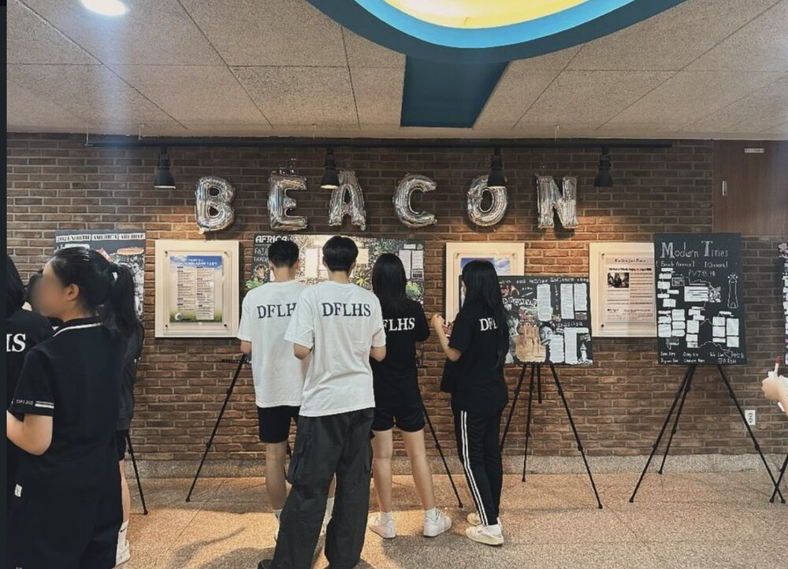
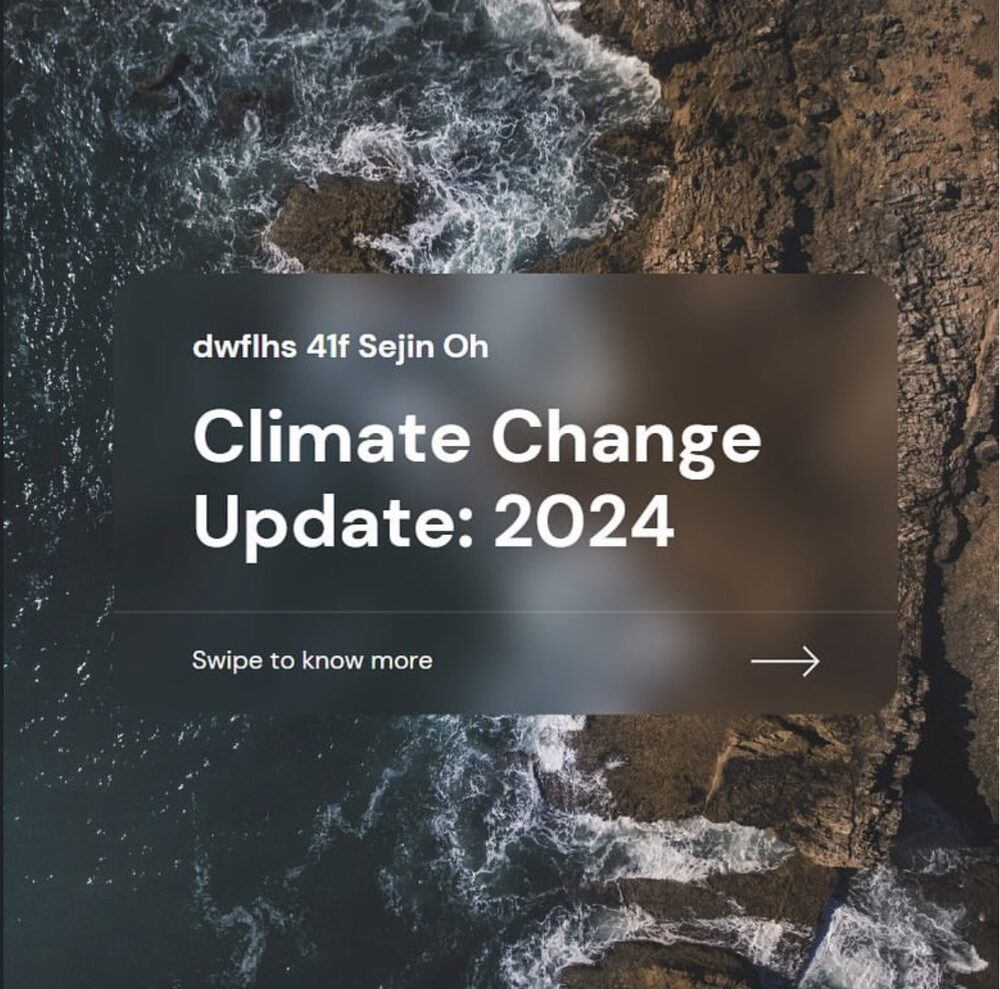

Journalism
26th Cohort, Republic of Korea Youth Press Corps
President & Editor-in-Chief, BEACON
The school's only English-language newspaper
- Directed a biannual publication and managed and edited 50+ members' reports.
- Reported on events including the Rwandan Genocide and the war in Ukraine.
- Wrote 10,000+ words on policy and philosophy topics, including child welfare, crime & justice, epistemology, AI ethics, jus ad bellum, the categorical imperative, lexicographic ordering, and domination.
- Published with the Korea Youth Press Corps.


Journalist, Ithaca High School (IHS) Tattler
- Wrote on topics including a comparison of school systems and the Israeli–Palestinian conflict.
Editor & Writer, Lux et Nox (English Film Magazine)
- Wrote articles comparing color and black-and-white film; donated earnings to charity.
- Edited and revised the magazine; published monthly journals.
A Comparison of Algeria-France and Korea-Japan Relationships
- Compared the four countries' formerly colonial relationships and found striking similarities.
- Researched France's Laïcité policy and Korea's Dokdo Island controversy to determine the lasting impact of the colonial relationships.
Invited Publications
Addressing the Escalation of Armed Conflict and the Role of Regional Powers in the Middle East
- Focused on the Israeli-Palestinian conflict and possible UNSC responses, dividing the problem into escalation and the role of regional actors.
- Chaired a Model UN conference on the same topic for beginner delegates.
- Invited for publication by Curieux Journal.
Through the Lens of OHCHR: Sustainable Solutions for Slums and Squatter Settlements in South America
- Examined the history of informal housing in South America and proposed legislative solutions.
- Chaired a Model UN conference on the same topic for beginner delegates.
- Invited for publication by Curieux Journal.